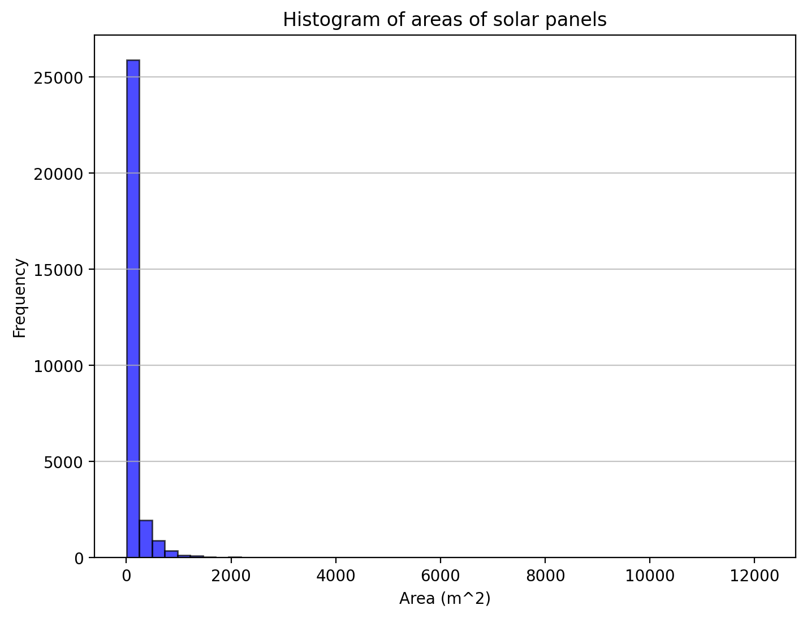

Training a solar panel detector using YOLOv12 to detect solar panels in aerial images.
code
object detection
computer vision
Author
Shardul Junagade
Published
February 27, 2025
Building a Solar Panel Detector
In this notebook, we will build a solar panel detector that can detect solar panels in aerial images. We’ll use the YOLOv12 model, which is the latest state-of-the-art object detection model from Ultralytics, to identify and locate solar panels in high-resolution aerial imagery.
This project will demonstrate:
Data preprocessing and exploration of the Solar Panel Object Labels dataset
Implementation of evaluation metrics (IoU, AP)
Training and fine-tuning of the YOLOv12 model
Evaluation of model performance on test data
Visualization and interpretation of results
Importing Libraries
Code
import torchfrom ultralytics import YOLOimport supervision as svimport shapely.geometry as sgimport numpy as npimport pandas as pdimport matplotlib.pyplot as pltimport osimport shutil# Retina display%config InlineBackend.figure_format ='retina'%matplotlib inlinedef set_seed(seed=42): np.random.seed(seed) torch.manual_seed(seed)if torch.cuda.is_available(): torch.cuda.manual_seed_all(seed)set_seed()device = torch.device('cuda'if torch.cuda.is_available() else'cpu')print('Using device:', device)
Using device: cuda
Data Exploration and Understanding
We will use the Solar Panel Object Labels dataset from Figshare. This dataset contains high-resolution aerial images with labeled solar panels. We will use the 31 cm native resolution images of sizes 416x416 pixels for our analysis.
The dataset files follow a specific naming structure: solarpanels_native_<image_number>__x0_<x_coordinate>_y0_<y_coordinate>_dxdy_<size>.
For example, in the file solarpanels_native_1__x0_0_y0_6845_dxdy_416.txt:
solarpanels_native: Indicates that the file contains solar panel data in native resolution.
<image_number>: The number of the image in the dataset.
x0_<x_coordinate>: The x-coordinate of the top-left corner of the image.
y0_<y_coordinate>: The y-coordinate of the top-left corner of the image.
dxdy_<size>: The size of the image in pixels (both width and height).
Each line in the file represents a detected solar panel with the following format: category x_center y_center width height, where:
category: The category label (0 for solar panels).
x_center: The x-coordinate of the center of the bounding box (normalized).
y_center: The y-coordinate of the center of the bounding box (normalized).
width: The width of the bounding box (normalized).
height: The height of the bounding box (normalized).
Code
image_dir ='data/images_native/'label_dir ='data/labels_native/'image_size =416meters_per_pixel =0.31# meters per pixel
Code
image_names =sorted([image_name for image_name in os.listdir(image_dir) if image_name.endswith('.tif')])label_names =sorted([label_name for label_name in os.listdir(label_dir) if label_name.endswith('.txt')])print('Number of images:', len(image_names))print('Number of labels:', len(label_names))
Number of images: 2553
Number of labels: 2542
The number of images and the number of labels is not the same. So, we can remove the images that do not have corresponding labels and remove the labels that do not have corresponding images.
Code
# delete the images that do not have corresponding labelsfor image_name in image_names:if image_name.replace('.tif', '.txt') notin label_names: os.remove(image_dir + image_name)# delete the labels that do not have corresponding imagesfor label_name in label_names:if label_name.replace('.txt', '.tif') notin image_names: os.remove(label_dir + label_name)image_names =sorted([image_name for image_name in os.listdir(image_dir) if image_name.endswith('.tif')])label_names =sorted([label_name for label_name in os.listdir(label_dir) if label_name.endswith('.txt')])print('Number of images:', len(image_names))print('Number of labels:', len(label_names))
Number of images: 2542
Number of labels: 2542
Dataset Statistics
Code
total_instances =0class_count = {}for label_name in label_names: label_path = os.path.join(label_dir, label_name)withopen(label_path, 'r') as f: lines = f.readlines() total_instances +=len(lines)for line in lines: class_name = line.split()[0] class_count[class_name] = class_count.get(class_name, 0) +1class_count =dict(sorted(class_count.items()))print('Total instances:', total_instances)print('\nNumber of unique classes:', len(class_count))print('\nClass-wise distribution:')for class_name, count in class_count.items():print(f' Class {class_name}: {count}')
Total instances: 29625
Number of unique classes: 3
Class-wise distribution:
Class 0: 29267
Class 1: 130
Class 2: 228
Since, we are doing a detection task, I converted all labels of class 1 and 2 to class 0.
Code
# convert all classes to 0 in the labelsfor label_name in label_names: label_path = os.path.join(label_dir, label_name)withopen(label_path, 'r') as f: lines = f.readlines()withopen(label_path, 'w') as f:for line in lines: f.write('0 '+' '.join(line.split()[1:]) +'\n')# updated class countclass_count = {}for label_name in label_names: label_path = os.path.join(label_dir, label_name)withopen(label_path, 'r') as f: lines = f.readlines()for line in lines: class_name = line.split()[0] class_count[class_name] = class_count.get(class_name, 0) +1print('Updated class-wise distribution:')for class_name, count in class_count.items():print(f' Class {class_name}: {count}')
Updated class-wise distribution:
Class 0: 29625
Code
# Calculate number of images having a particular number of labelslabel_distribution = {}for label_name in label_names: label_path = os.path.join(label_dir, label_name)withopen(label_path, 'r') as f: lines = f.readlines() num_labels =len(lines) label_distribution[num_labels] = label_distribution.get(num_labels, 0) +1label_distribution =dict(sorted(label_distribution.items()))print('Value counts of labels per image:')for num_labels, count in label_distribution.items():print(f'{count} images have {num_labels} labels.')
Value counts of labels per image:
81 images have 1 labels.
167 images have 2 labels.
221 images have 3 labels.
218 images have 4 labels.
217 images have 5 labels.
189 images have 6 labels.
170 images have 7 labels.
184 images have 8 labels.
169 images have 9 labels.
121 images have 10 labels.
97 images have 11 labels.
84 images have 12 labels.
69 images have 13 labels.
49 images have 14 labels.
46 images have 15 labels.
41 images have 16 labels.
36 images have 17 labels.
25 images have 18 labels.
29 images have 19 labels.
14 images have 20 labels.
4 images have 21 labels.
1 images have 22 labels.
4 images have 23 labels.
2 images have 24 labels.
4 images have 25 labels.
3 images have 26 labels.
5 images have 27 labels.
5 images have 28 labels.
15 images have 29 labels.
20 images have 30 labels.
8 images have 31 labels.
7 images have 32 labels.
13 images have 33 labels.
19 images have 34 labels.
10 images have 35 labels.
6 images have 36 labels.
17 images have 37 labels.
13 images have 38 labels.
6 images have 39 labels.
9 images have 40 labels.
10 images have 41 labels.
12 images have 42 labels.
11 images have 43 labels.
4 images have 44 labels.
2 images have 45 labels.
5 images have 46 labels.
9 images have 47 labels.
3 images have 48 labels.
5 images have 49 labels.
6 images have 50 labels.
9 images have 51 labels.
16 images have 52 labels.
4 images have 53 labels.
6 images have 54 labels.
1 images have 55 labels.
1 images have 56 labels.
3 images have 58 labels.
2 images have 59 labels.
2 images have 60 labels.
1 images have 61 labels.
6 images have 62 labels.
3 images have 63 labels.
1 images have 64 labels.
3 images have 65 labels.
4 images have 66 labels.
1 images have 67 labels.
1 images have 71 labels.
1 images have 72 labels.
1 images have 73 labels.
5 images have 74 labels.
1 images have 75 labels.
2 images have 76 labels.
2 images have 77 labels.
1 images have 78 labels.
Area of Solar Panels
We can calculate the area of the solar panels (in square meters) as follows:
areas = []for label_name in label_names: label_path = os.path.join(label_dir, label_name)withopen(label_path, 'r') as f: lines = f.readlines()for line in lines: class_name, x_center, y_center, width, height =map(float, line.split())# print(class_name, x_center, y_center, width, height) real_width = width * image_size * meters_per_pixel real_height = height * image_size * meters_per_pixel area = real_width * real_height areas.append(area)areas = np.array(areas)mean_area = np.mean(areas)std_area = np.std(areas)print(f'Mean area of solar panels: {mean_area:.2f} m^2')print(f'Standard deviation of area of solar panels: {std_area:.2f} m^2')plt.figure(figsize=(8, 6))plt.hist(areas, bins=50, color='blue', edgecolor='black', alpha=0.7)plt.xlabel('Area (m^2)')plt.ylabel('Frequency')plt.title('Histogram of areas of solar panels')plt.grid(axis='y', alpha=0.75)plt.show()
Mean area of solar panels: 191.52 m^2
Standard deviation of area of solar panels: 630.70 m^2

From the above histogram, we can observe the following:
The majority of the solar panels have areas concentrated around the lower end of the scale.
There are fewer instances of solar panels with larger areas.
The distribution appears to be right-skewed, indicating that most solar panels are relatively small in size, with a few larger ones.
Implementing the Fundamental Functions
Intersection over Union (IoU)
Intersection over Union (IoU) is a metric used to evaluate the accuracy of an object detector on a particular dataset. It measures the overlap between two bounding boxes: the predicted bounding box and the ground truth bounding box.
The IoU is calculated as follows:
Intersection: The area of overlap between the predicted bounding box and the ground truth bounding box.
Union: The total area covered by both the predicted bounding box and the ground truth bounding box.
The IoU is then computed as the ratio of the intersection area to the union area:
\[
\text{IoU} = \frac{\text{Area of Intersection}}{\text{Area of Union}}
\]
The IoU value ranges from 0 to 1, where:
0 indicates no overlap between the bounding boxes.
1 indicates a perfect overlap between the bounding boxes.
Usage of Shapely Library:
Shapely’s Polygon class is used to represent bounding boxes as geometric shapes, defined by their corner coordinates. The intersection area between two polygons is computed using the .intersection() method, which finds the overlapping region of the two bounding boxes. The union area is determined using the .union() method, which combines both polygons into a single shape.
IoU computed using shapely: 0.2857
IoU computed using supervision: 0.2857
Average Precision (AP)
Average Precision (AP) is a metric used to evaluate the performance of object detection models. It summarizes the precision-recall curve into a single value, representing the average of precision values at different recall levels.
Precision: The ratio of true positive detections to the total number of positive detections (true positives + false positives).
The precision-recall curve is plotted with precision on the y-axis and recall on the x-axis. The Average Precision (AP) is calculated as the area under the precision-recall curve.
There are different methods to compute AP:
Pascal VOC 11-point interpolation: Precision is sampled at 11 recall levels (0.0, 0.1, …, 1.0), and the average of these precision values is taken.
COCO 101-point interpolation: Precision is sampled at 101 recall levels (0.0, 0.01, …, 1.0), and the average of these precision values is taken.
Area under Precision-Recall Curve (PRC): The area under the precision-recall curve is computed using numerical integration methods.
Code
from sklearn.metrics import aucdef compute_ap(precisions, recalls, method="voc11"):# Pascal VOC 11-point methodif method =="voc11": recall_points = np.linspace(0, 1, 11) ap =0.0for r in recall_points: ap +=max(precisions[recalls >= r]) if np.any(recalls >= r) else0 ap /=11# COCO 101-point methodelif method =="coco101": recall_points = np.linspace(0, 1, 101) ap = np.mean([max(precisions[recalls >= r]) if np.any(recalls >= r) else0for r in recall_points])# AUC methodelif method =="auc_pr": ap = auc(recalls, precisions)else:raiseValueError("Invalid AP computation method.")return ap# calculate precision and recall valuesdef compute_precision_recall(gt_boxes, pred_boxes, scores, image_size, iou_threshold=0.5): all_tp = [] all_fp = [] num_gt_boxes =sum(len(gt) for gt in gt_boxes)if num_gt_boxes ==0:return np.array([]), np.array([])for gt_boxes_image, pred_boxes_image, scores_image inzip(gt_boxes, pred_boxes, scores):# Sort predicted boxes by confidence score in descending order sorted_indices = np.argsort(scores_image)[::-1] pred_boxes_image = [pred_boxes_image[idx] for idx in sorted_indices] scores_image = [scores_image[idx] for idx in sorted_indices] tp = np.zeros(len(pred_boxes_image)) fp = np.zeros(len(pred_boxes_image)) gt_matched = np.zeros(len(gt_boxes_image))for j, pred_box inenumerate(pred_boxes_image):iflen(gt_boxes_image) ==0: fp[j] =1continue ious = [iou_shapely(pred_box, gt_box, image_size) for gt_box in gt_boxes_image] max_iou =max(ious) if ious else0 max_iou_idx = np.argmax(ious) if ious else-1if max_iou >= iou_threshold and max_iou_idx !=-1and gt_matched[max_iou_idx] ==0: tp[j] =1 gt_matched[max_iou_idx] =1else: fp[j] =1 all_tp.extend(tp) all_fp.extend(fp)# Compute Precision-Recall tp_cumsum = np.cumsum(all_tp) fp_cumsum = np.cumsum(all_fp) precisions = tp_cumsum / (tp_cumsum + fp_cumsum +1e-8) # Avoid division by zero recalls = tp_cumsum / num_gt_boxesreturn precisions, recalls
# Compute AP50ap50_voc11 = compute_ap(precisions, recalls, method="voc11")ap50_coco101 = compute_ap(precisions, recalls, method="coco101")ap50_auc_pr = compute_ap(precisions, recalls, method="auc_pr")print(f'AP50 using VOC11 method: {ap50_voc11:.4f}')print(f'AP50 using COCO101 method: {ap50_coco101:.4f}')print(f'AP50 using AUC-PR method: {ap50_auc_pr:.4f}')
AP50 using VOC11 method: 0.2685
AP50 using COCO101 method: 0.2571
AP50 using AUC-PR method: 0.2188
Model Building and Evaluation
Splitting the Data
We will split the data into training and testing sets using an 80-20 split. We will further split the training data into training and validation sets using a 90-10 split. This will allow us to train the model on the training set and tune the hyperparameters on the validation set. The testing set will be used to evaluate the model’s performance on unseen data.
Code
image_dir ='data/images_native/'label_dir ='data/labels_native/'image_size =416meters_per_pixel =0.31# meters per pixel
Code
def split_data(image_dir, label_dir, save_dir="split_data", train_ratio=0.8, val_ratio=0.1): os.makedirs(save_dir, exist_ok=True)for split in ["train", "val", "test"]: os.makedirs(os.path.join(save_dir, split, "images"), exist_ok=True) os.makedirs(os.path.join(save_dir, split, "labels"), exist_ok=True) image_names =sorted([image_name for image_name in os.listdir(image_dir) if image_name.endswith('.tif')]) label_names =sorted([label_name for label_name in os.listdir(label_dir) if label_name.endswith('.txt')]) num_images =len(image_names)# shuffle the data indices = np.arange(num_images) np.random.shuffle(indices) train_size =int(train_ratio * num_images) val_size =int(val_ratio * train_size) test_size = num_images - train_size train_indices = indices[:train_size] val_indices = train_indices[-val_size:] train_indices = train_indices[:-val_size] test_indices = indices[train_size:]def copy_data(indices, split):for idx in indices: image_src = os.path.join(image_dir, image_names[idx]) label_src = os.path.join(label_dir, label_names[idx]) image_dst = os.path.join(save_dir, split, "images", image_names[idx]) label_dst = os.path.join(save_dir, split, "labels", label_names[idx]) shutil.copy(image_src, image_dst) shutil.copy(label_src, label_dst) copy_data(train_indices, "train") copy_data(val_indices, "val") copy_data(test_indices, "test")print(f"Data split and saved in '{save_dir}/' successfully!")print(f"Train: {len(train_indices)} images")print(f"Validation: {len(val_indices)} images")print(f"Test: {len(test_indices)} images")split_data(image_dir, label_dir, save_dir="split_data", train_ratio=0.8, val_ratio=0.1)
Data split and saved in 'split_data/' successfully!
Train: 1830 images
Validation: 203 images
Test: 509 images
Code
# Create YAML content with absolute pathsbase_path = os.path.abspath('./split_data')yaml_content =f"""path: {base_path}train: {os.path.join(base_path, 'train', 'images')}val: {os.path.join(base_path, 'val', 'images')}test: {os.path.join(base_path, 'test', 'images')}nc: 1 # number of classesnames: ['solar_panel'] # class names"""data_yml_path = os.path.join(base_path, 'data.yaml')withopen(data_yml_path, 'w') as f: f.write(yaml_content)print(f"data.yaml created at:\n{data_yml_path}")del base_path
data.yaml created at:
c:\Users\shard\Desktop\SRIP-Project-Task\split_data\data.yaml
Code
print(yaml_content)
path: c:\Users\shard\Desktop\SRIP-Project-Task\split_data
train: c:\Users\shard\Desktop\SRIP-Project-Task\split_data\train\images
val: c:\Users\shard\Desktop\SRIP-Project-Task\split_data\val\images
test: c:\Users\shard\Desktop\SRIP-Project-Task\split_data\test\images
nc: 1 # number of classes
names: ['solar_panel'] # class names
# load the ground truth and predictionstest_images = os.listdir('split_data/test/images')test_labels = os.listdir('split_data/test/labels')targets = []predictions = []for i, image_name inenumerate(test_images): image_path = os.path.join('split_data/test/images', image_name) label_path = os.path.join('split_data/test/labels', image_name.replace('.tif', '.txt'))# Load the ground truth and predictions target_sv_detection = load_detections(image_path)# print(target_sv_detection.xyxy) results = model(image_path, verbose=False)[0] pred_sv_detection = sv.Detections.from_ultralytics(results)# print(pred_sv_detection.xyxy) targets.append(target_sv_detection) predictions.append(pred_sv_detection)print(len(targets), len(predictions))
509 509
Code
import pickle# Save the detectionswithopen("detections.pkl", "wb") as f: pickle.dump({"targets": targets, "predictions": predictions}, f)# Load the detectionswithopen("detections.pkl", "rb") as f: data = pickle.load(f)targets = data["targets"]predictions = data["predictions"]print(len(targets), len(predictions))
509 509
Code
# Compute mAP50 using supervisionmetrics = sv.metrics.MeanAveragePrecision()results = metrics.update(targets, predictions).compute()mAP50_supervision = results.map50print(f"mAP50 using supervision: {mAP50_supervision:.4f}")
mAP50 using supervision: 0.9018
Code
# Compute mAP50 using my implementationall_gt_boxes, all_pred_boxes, all_scores = [], [], []for target, prediction inzip(targets, predictions): all_gt_boxes.append(target.xyxy) all_pred_boxes.append(prediction.xyxy) all_scores.append(prediction.confidence)precisions, recalls = compute_precision_recall(all_gt_boxes, all_pred_boxes, all_scores, image_size, iou_threshold=0.5)mAP50_mine = compute_ap(precisions, recalls, method="auc_pr")print(f"mAP50 using my implementation: {mAP50_mine:.4f}")
mAP50 using my implementation: 0.8930
TODO:
Create a table of Precision, Recall and F1-scores where rows are IoU thresholds [0.1, 0.3, 0.5, 0.7, 0.9] and columns are confidence thresholds [0.1, 0.3, 0.5, 0.7, 0.9]
(Hint use supervision.metrics.ConfusionMatrix to get the confusion matrix and get TP, FP and FN from it to compute the P, R and F-1)